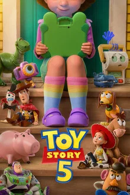

Toy Story 5 ★★★★☆
Genre: Animation·Comedy·Family
Age Rating: PG
Release Date: June 19, 2026
Directors: Andrew Stanton·McKenna Harris
Producers: Pixar Animation Studios
Where to Watch:

Genre: Animation·Comedy·Family
Age Rating: PG
Release Date: June 19, 2026
Directors: Andrew Stanton·McKenna Harris
Producers: Pixar Animation Studios
Where to Watch:
While another sequel seemed unnecessary on paper, Pixar justifies its existence by tackling the modern reality of physical toys competing with digital screens. It is a surprisingly melancholic, beautifully animated chapter that speaks more directly to the OG fans who grew up with the franchise than to a new generation.
A scene featuring Buzz Lightyear interacting with and leading a whole squad of 50 identical Buzz Lightyears, including synchronized drone and water-emergence sequences. This scene produced a laughable comedic moment for the audience.